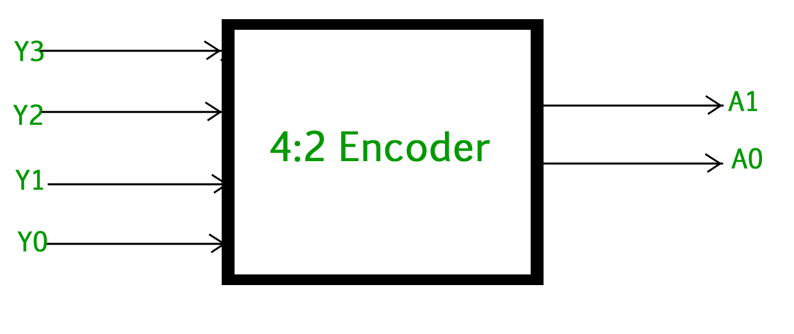
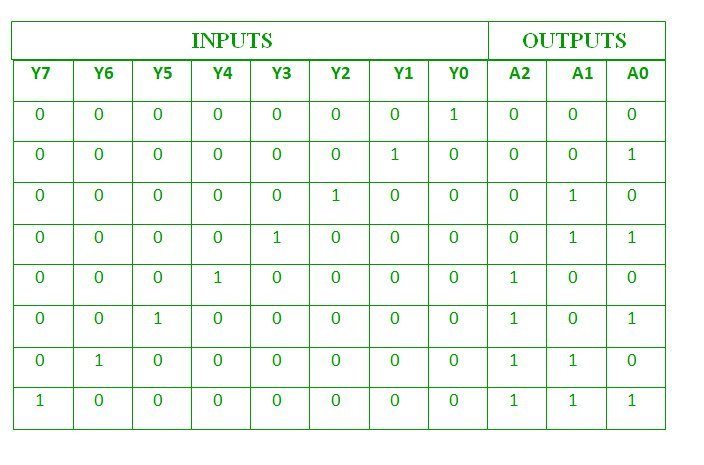
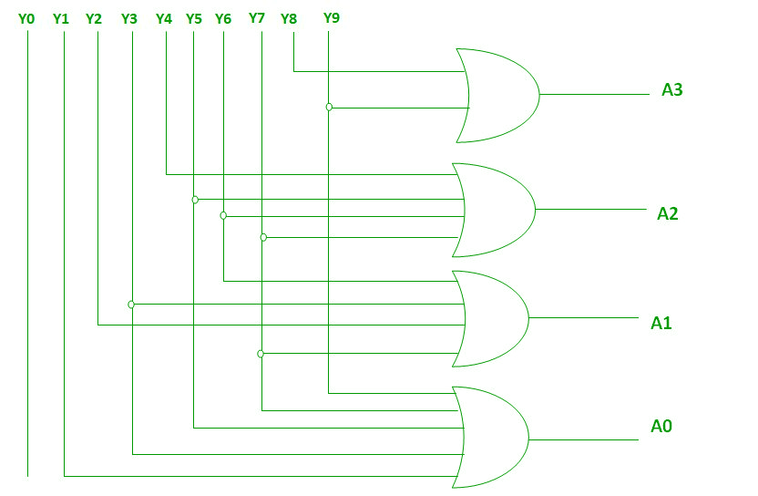

An Encoder is a combinational circuit that performs the reverse operation of Decoder.It has maximum of 2^n input lines and ‘n’ output lines, hence it encodes the information from 2^n inputs into an n-bit code. It will produce a binary code equivalent to the input, which is active High. Therefore, the encoder encodes 2^n input lines with ‘n’ bits.

4 : 2 Encoder –
The 4 to 2 Encoder consists of four inputs Y3, Y2, Y1 & Y0 and two outputs A1 & A0. At any time, only one of these 4 inputs can be ‘1’ in order to get the respective binary code at the output. The figure below shows the logic symbol of 4 to 2 encoder :

The Truth table of 4 to 2 encoder is as follows :

Logical expression for A1 and A0 :
A1 = Y3 + Y2 A0 = Y3 + Y1
The above two Boolean functions A1 and A0 can be implemented using two input OR gates :
8 : 3 Encoder (Octal to Binary) –
The 8 to 3 Encoder or octal to Binary encoder consists of 8 inputs : Y7 to Y0 and 3 outputs : A2, A1 & A0. Each input line corresponds to each octal digit and three outputs generate corresponding binary code.
The figure below shows the logic symbol of octal to binary encoder:
The truth table for 8 to 3 encoder is as follows :

Logical expression for A2, A1 and A0 :
A2 = Y7 + Y6 + Y5 + Y4 A1 = Y7 + Y6 + Y3 + Y2 A0 = Y7 + Y5 + Y3 + Y1
The above two Boolean functions A2, A1 and A0 can be implemented using four input OR gates :
Decimal to BCD Encoder –
The decimal to binary encoder usually consists of 10 input lines and 4 output lines. Each input line corresponds to the each decimal digit and 4 outputs correspond to the BCD code. This encoder accepts the decoded decimal data as an input and encodes it to the BCD output which is available on the output lines. The figure below shows the logic symbol of decimal to BCD encoder :
The truth table for decimal to BCD encoder is as follows:
Logical expression for A3, A2, A1 and A0 :
A3 = Y9 + Y8 A2 = Y7 + Y6 + Y5 +Y4 A1 = Y7 + Y6 + Y3 +Y2 A0 = Y9 + Y7 +Y5 +Y3 + Y1
The above two Boolean functions can be implemented using OR gates :

Priority Encoder –
A 4 to 2 priority encoder has 4 inputs : Y3, Y2, Y1 & Y0 and 2 outputs : A1 & A0. Here, the input, Y3 has the highest priority, whereas the input, Y0 has the lowest priority. In this case, even if more than one input is ‘1’ at the same time, the output will be the (binary) code corresponding to the input, which is having higher priority.
The truth table for priority encoder is as follows :

The above two Boolean functions can be implemented as :

Drawbacks of Normal Encoders –
- There is an ambiguity, when all outputs of encoder are equal to zero.
- If more than one input is active High, then the encoder produces an output, which may not be the correct code.
So, to overcome these difficulties, we should assign priorities to each input of encoder. Then, the output of encoder will be the ( code corresponding to the active High inputs, which has higher priority.
Uses of Encoders –
- Encoders are very common electronic circuits used in all digital systems.
- Encoders are used to translate the decimal values to the binary in order to perform the binary functions such as addition, subtraction, multiplication, etc.
- Other applications especially for Priority Encoders may include detecting interrupts in microprocessor applications.
GATE CS Corner Questions
Practicing the following questions will help you test your knowledge. All questions have been asked in GATE in previous years or in GATE Mock Tests. It is highly recommended that you practice them.
References –
Encoder – Wikipedia
Priority encoder – Wikipedia